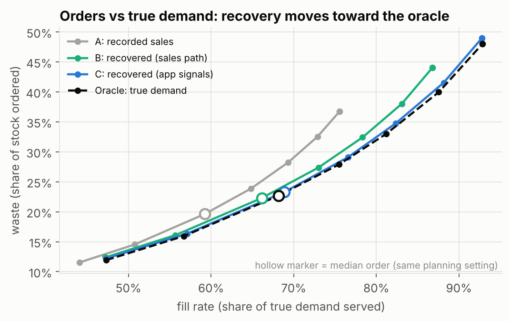

Hidden demand: what customers wanted after the shelf went empty
When an item sells out, recorded sales stop counting demand. Forecasts built on those sales order less next time, and the shelf empties earlier. We estimate the demand hidden by stockouts from sales patterns and from app signals, and test what that does to orders.
Open the interactive demo See the resultsThe problem
In 898 real fresh-grocery stores (FreshRetailNet-50K), 44% of store-item-days run out of stock during opening hours, and most are not restocked that day. The share of items out of stock climbs from about 7% in the morning to about 40% by 9 pm, while customers keep shopping.

Approach
- Recover hidden demand from sales history. The item's usual intra-day pattern plus a model trained on synthetic sell-outs, generated the way real ones happen: when demand passes the stock on hand.
- Recover it from app signals. Customers still open a sold-out product page. Unique viewers during the sell-out × the item's usual view-to-purchase rate estimates demand directly.
- Forecast and order. Next-day forecasts trained on recovered instead of recorded demand, turned into orders with a newsvendor rule at a chosen service level.
- Evaluate honestly. Rolling time splits; a check that needs no assumptions on real sell-out days; and a simulated store where true demand is known on every day.
Early results





What is real and what is simulated
Real: sales-history recovery, forecasts and the sell-out-day check use FreshRetailNet-50K (anonymised, normalised sales). The app-signal results use REES46 product-page views and purchases (general e-commerce, not grocery).
Simulated: the store with known true demand, and app views on grocery demand. Both are built on real demand patterns and labelled wherever shown. The method transfers; exact percentages will differ on other data.
Builds on
- Wang et al. (2025), FreshRetailNet-50K: a stockout-annotated censored demand dataset, arXiv:2505.16319. Dataset licensed CC BY 4.0.
- Yin, Zheng & Kong (2026), Demand hidden by stockouts, Sustainability 18(15):7642.
- REES46 eCommerce behavior data (Kaggle). Used only to compute aggregate statistics; no data is redistributed here.
New in this work: app signals as a second, nearly unbiased view of demand during sell-outs; synthetic sell-outs generated from stock levels; and evaluation that includes sell-out days instead of scoring only days that stayed in stock.